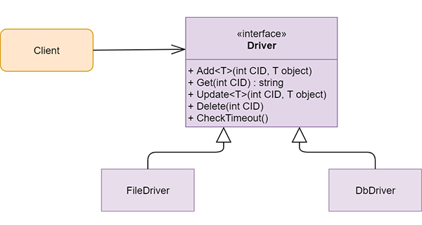

Wzorce
Strategia
Wykorzystywany jest wzorzec Strategia do wyboru opcji zapisu konwersacji. Istnieją dwie takie możliwości - zapis danych do pliku bądź do bazy danych.
Table Data Gateway
Dany wzorzec służy do komunikacji z bazą danych. Tworzona jest tylko jedna klasa zapewniająca pełną obsługę bazy danych, czyli zapis danych, odczyt, aktualizacja lub usunięcie danych konwersacji, które zostały już zakończone.
Value Object
Zapewnia bezpieczeństwo obsługi konwersacji dzięki możliwości porównywania kontekstów za pomocą zarówno ID jak i miejsca zapisu danych